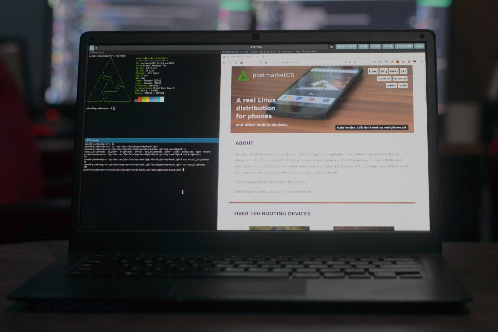

PINE64 Pinebook Pro (pine64-pinebookpro)
|

The Pinebook Pro running Sway |
|
| Manufacturer | PINE64 |
|---|---|
| Name | Pinebook Pro |
| Codename | pine64-pinebookpro |
| Released | 2019 |
| Category | community |
| Original software | Linux 4.4.x |
| postmarketOS kernel | 5.14 |
| Hardware | |
| Chipset | Rockchip RK3399 |
| CPU | 4x 1.5 GHz Cortex-A53 & 2x 2Ghz Cortex-A72 |
| GPU | Mali-T860 MP4 |
| Storage | 64GB eMMC (Upgradable) |
| Memory | 4 GB |
| Architecture | aarch64 |
| Non-Android based device | ✔ |
| Unixbench Whet/Dhry score | 2742.3 |
{kind=link}
| USB Networking |
Unavailable
|
|---|---|
| Flashing |
Unavailable
|
| Touchscreen |
Unavailable
|
| Display |
Works
|
| WiFi |
Works
|
| FDE |
Works
|
| Mainline |
Works
|
| Battery |
Works
|
| 3D Acceleration |
Works
|
| Audio |
Works
|
| Bluetooth |
Works
|
| Camera |
Works
|
| GPS |
Unavailable
|
| Mobile data |
Unavailable
|
| SMS |
Unavailable
|
| Calls |
Unavailable
|
| USB OTG |
Works
|
| NFC |
Unavailable
|
| Accelerometer |
Unavailable
|
|---|---|
| Magnetometer |
|
| Ambient Light |
|
| Proximity |
|
| Hall Effect |
|
| Barometer |
|
| Power Sensor |
|
| Keyboard |
Works
|
|---|---|
| Touchpad |
Works
|
| USB-A |
Works
|
| HDMI/DP |
Unavailable
|
| Ir TX |
Unavailable
|
| TrustZone |
|
| FOSS bootloader |
|
Contributors
Users owning this device
- Alexeymin ( Notes: Running postmarketOS)
- Anjanmomi ( Notes: main machine other than x230)
- Bdju ( Notes: on-the-go primary)
- BenTheTechGuy ( Notes: Running Debian)
- Danct12 ( Notes: current otg daily driver)
- Flacks
- Harryausten ( Notes: with M.2 adapter)
- Jem
- Segfault
- Tuxfanou ( Notes: Current main computer)
Serial console
The Pinebook Pro has a serial port on the headphone connector, it's enabled by removing the bottom cover of the laptop and setting the UART switch towards the touchpad.
The uart is 1500000n8
The pinout for the serial connector on the laptop side is:
- Tip: RX
- Ring: TX
- Sleeve: GND
The serial connection is 3.3V
You can also buy the debug cable from PINE64 Store .
Storage
The SD card is /dev/mmcblk2 and the eMMC is /dev/mmcblk0
Booting
The Pinebook Pro boots using u-boot. The bootrom in the rk3399 soc will look for u-boot on the SPI flash chip, then the eMMC and then the SD card slot . It will boot the first functioning u-boot image it can find.
There is also a work-in-progress graphical version of u-boot that can show the boot messages on the built-in display and present a menu for choosing which medium to boot. This u-boot build should also be able to boot generic ARM64 UEFI linux installations.
The 3 ways to boot postmarketOS on the Pinebook Pro
Booting from SD
To boot from the SD the SPI bootloader and eMMC bootloader need to be disabled. Then the SoC will fallback to a bootloader on the SD card so postmarketOS can be fully booted from SD.
The Pinebook Pro comes with an empty SPI chip from the factory so that doesn't need anything by default. To temporarily disable the eMMC booting you can open up the back cover and disable the eMMC switch on the main board or remove the eMMC chip from the socket.
Booting from eMMC
To boot it from eMMC you have to overwrite the OS that's on the eMMC already. This is possible to do from an OS booted from SD with the steps above, or by removing the eMMC from the socket and using an pine64 eMMC USB reader to write postmarketOS to it the same way as an SD card.
Booting from SPI
This requires flashing u-boot to the SPI. After u-boot has been flashed the other boot options won't be tried anymore so try at your own risk.
Updating the keyboard and touchpad firmware
The default firmware in the keyboard controller and touchpad controller on the Pinebook Pro is not ideal, not all key combinations are possible (like the super key + arrow keys) and the mouse response is a bit sluggish and imprecise. Some PINE64 community members have made better firmware for the keyboard controller and the touchpad controller which fix these issues.
The upgrade process requires a reboot between the steps and for ANSI models you need an external keyboard to continue the upgrade process (or being able to ssh into the laptop and run the second step).
1. Identify the model of your Pinebook Pro.
- There's an ANSI and an ISO layout variant of the laptop, if your keyboard has the \ button on the left beside the shift key its an ISO, the ANSI model has the key above the Enter key.
- You can also check the keyboard layout illustration on wikimedia
{kind=link}
2. Download and build the firmware updater
-
$ sudo apk add git curl vim alpine-sdk libusb-dev $ git clone https://github.com/jackhumbert/pinebook-pro-keyboard-updater.git $ cd pinebook-pro-keyboard-updater $ curl https://mirror.postmarketos.org/images/pinebookpro/tpfw.bin > firmware/tpfw.bin $ make
3. Run the first stage of the updater. Warning: The built-in keyboard might not function correctly after this step, make sure you have an external keyboard
-
For ISO layout: $ sudo ./updater step-1 iso $ sudo poweroff For ANSI layout: $ sudo ./updater step-1 ansi $ sudo poweroff
4. Turn the laptop back on and go back to the pinebook-pro-keyboard-updater directory. Then run the second stage of the updater
-
For ISO layout: $ sudo ./updater step-2 iso $ sudo poweroff For ANSI layout: $ sudo ./updater step-2 ansi $ sudo poweroff
5. The touchpad is now fully updated after turning the laptop back on. The firmware on the keyboard controller is still the latest vendor firmware and can now be upgraded to the community version that fixes the key combinations by running stage 3
-
For ISO layout: $ sudo ./updater flash-kb firmware/default_iso.hex For ANSI layout: $ sudo ./updater flash-kb firmware/default_ansi.hex
Congratulations, your firmware is now up-to-date.
Flashing u-boot to the SPI
This will write a copy of the u-boot from the OS image to the SPI flash chip in the laptop. Once this has been done it will always boot from the SPI u-boot instead of the u-boot on the eMMC or SD card. This u-boot has the option to select the boot medium you want and also supports booting from USB storage.
|
|
WARNING: If this messes up you need a soldering iron to fix booting |
|
|
WARNING: Booting from this u-boot might be a problem for older kernels |
|
|
WARNING: Another warning just in case |
$ apk add flashrom
$ sudo flashrom --programmer linux_mtd --write /usr/share/u-boot/pine64-rockpro64/u-boot.spiflash.bin
If you want to use u-boot from eMMC/SD again, erase SPI flash:
$ sudo flashrom --programmer linux_mtd --erase
MPV settings for smooth playback
Put the following in your
~/.config/mpv/mpv.conf
:
profile=sw-fast
hwdec=auto
Video acceleration
|
|
These instructions recommend using an unmaintained and outdated project. See: https://gitlab.alpinelinux.org/alpine/aports/-/merge_requests/37411#note_254420 |
The rockchip rk3399 soc in the Pinebook Pro has a hardware video encoder and decoder called hantro, the open implementation supports mpeg2, h264 and h265 but not all profiles are supported on these codecs.
The hardware decoder can be used in any media player that supports libva like vlc or mpv, the extra module that's needed is libva-v4l2-request https://github.com/bootlin/libva-v4l2-request from bootlin. After building and installing v4l2_request_drv_video.so the decoder can be enabled by adding these environment variables:
$ export LIBVA_DRIVER_NAME=v4l2_request
$ export LIBVA_V4L2_REQUEST_VIDEO_PATH=/dev/video1
$ mpv --hwdec video-file.mp4
Trobleshooting
No audio on speakers
If you can see the audio devices in pavucontrol/pulsemixer, and see volume meters "jumping" when playing audio, but no sound comes from speakers: launch alsamixer and try to unmute switches called "Left Headphone Mixer Left DAC" and "Right Headphone Mixer Right DAC". Turning these on made both speakers work (despite switches names saying headphones).
Kconfig
This is just for documentation, the kernel ships configured correctly.
CONFIG_ROCKCHIP_CDN_DP=n # important, if this is set the display won't come up
CONFIG_BRCMFMAC_SDIO=y # wifi
# Audio
CONFIG_SND_SOC_SIMPLE_AMPLIFIER=y
CONFIG_SND_SOC_ROCKCHIP=y
CONFIG_SND_SOC_ES8316=y
# Power
CONFIG_CHARGER_GPIO=y
CONFIG_BATTERY_CW2015=y
CONFIG_TYPEC_FUSB302=y
CONFIG_REGULATOR_FAN53555=y
See also
- pmaports!882 Initial merge request
- PINE64 Wiki page about PineBook Pro
- Manjaro Kernel PKGBUILD